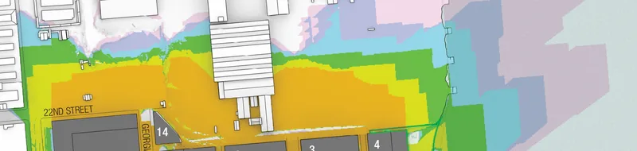
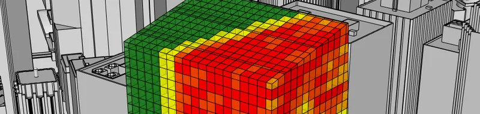
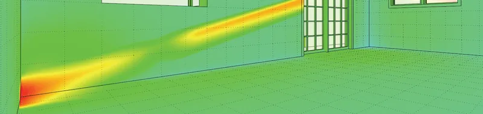
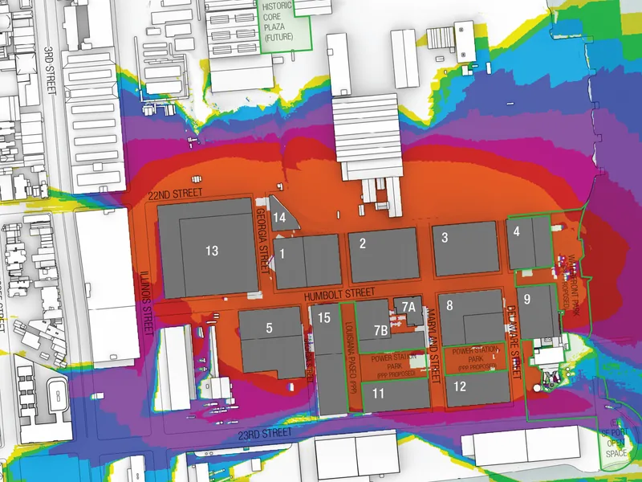
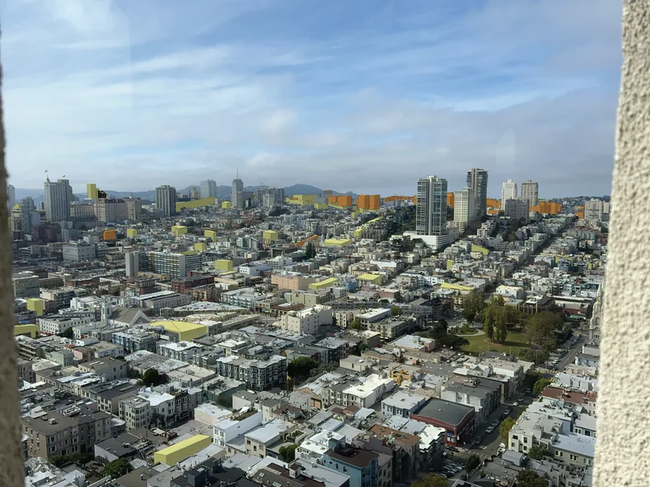
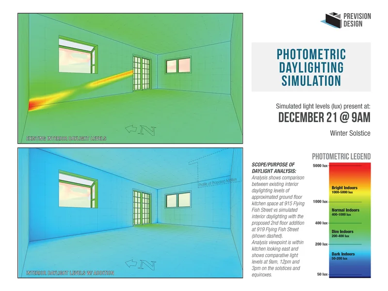
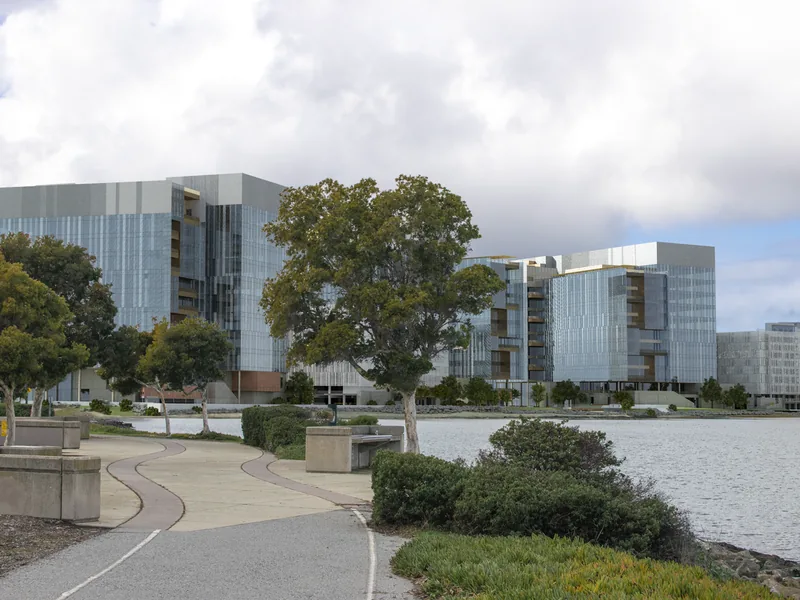
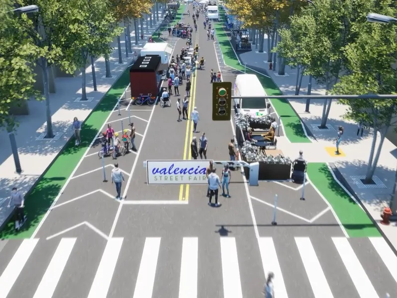
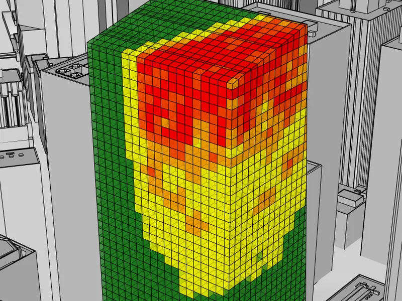

Analysis for
the Built Environment
Photorealistic visual simulations that show commissions and communities exactly what's proposed.
What We Do
Technical studies and reporting at the intersection of design, regulation, and the built environment

Shadow Studies
Quantitative shadow impact assessments, Section 295 compliance, shadow envelope studies, and location-duration heatmapping for CEQA and planning review.

Shadow Shaping
Design-phase collaboration that shapes building form to reduce or eliminate shadow cast on parks, plazas, and other sensitive areas — resolving impacts before they become entitlement risk.

Daylight Studies
Comprehensive daylight access analysis evaluating natural light conditions for proposed developments and their impact on surrounding properties.
Visual Studies
Photorealistic visual simulations and photomontages that communicate complex design proposals to stakeholders, planning commissions, and communities.
Peer Review
Independent technical review of shadow studies, visual simulations, and environmental analyses prepared by other consultants for quality assurance.
Ready to start your project?
Contact us for a consultation on your development project's analytical needs.
Get in TouchFeatured Work
A selection of recent projects spanning shadow analysis, daylight studies, and visual simulation






Trusted By
We collaborate with leading environmental consultants, architects, and developers

Adam Phillips
Prevision Design produces the technical studies and reporting that projects need to get through review — sun and shadow analysis, daylight studies, and visual simulation, prepared to the standards planning departments and hearing bodies expect.
Based in San Francisco and serving jurisdictions throughout California, we have developed unparalleled proficiency in navigating complex planning requirements while helping architects and developers optimize building envelopes and minimize impacts on public open spaces.
Get in Touch